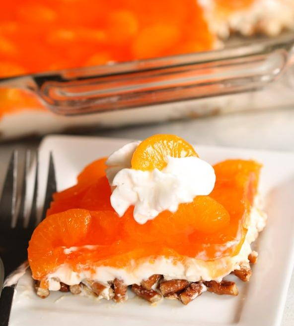

Mandarin Orange Pretzel Salad
This is a really pretty dish that can be served as a side dish or dessert.
This is a variation of the standard “Strawberry Pretzel Salad”.
Yes, you can use this baseline recipe for other fruits such as strawberries
(use red raspberry Jell-O), pineapple (use pineapple Jell-O), blueberries
(use blueberry Jell-O), or other.

Ingredients
Crust:
- 2 Cups Crushed Pretzels
- 3/4 cups - 1 cup butter melted
- 2-3 Tbsp Granulated Sugar
Filling:
- 1x 8oz. package cream cheese
- 1/2 cup powdered sugar
- 1x (8 oz.) cont. Cool Whip non-dairy whipped topping
Topping:
- 1x (6 oz.) box orange Jell-O
- 2x cups boiling water
- 3x (11 oz.) cans mandarin oranges drained
- Whipped cream for serving (optional)
Instructions:
- Preheat oven to 350 degrees. Place pretzels in a 1-gallon size re-sealable bag and crush
with a rolling pin.
- Crust:In a medium bowl, combine crushed pretzels, melted butter and 3 tablespoons
sugar. Stir together until well blended. Press the pretzel mixture evenly into a 9 x
13-inch baking dish and bake for 7 minutes. Allow crust to cool completely before adding the other layers.
- Filling:In a large bowl, beat softened cream cheese and 1 cup sugar together until
smooth. Fold in Cool Whip. Dollop filling over the pretzel crust then spread evenly with an off-set spatula
(be sure to seal the cream cheese layer against the sides of the dish so that the Jell-O
mixture will not be able to leak through when added).
- Topping: In a separate bowl, whisk together orange Jell-O and boiling water until the
Jell-O is completely dissolved. Set aside to cool slightly (about 10-15 minutes). Gently stir in
mandarin oranges. Pour the Jell-O/Mandarin orange mixture over the cream filling, spread
evenly.
- Place in the refrigerator and allow Jell-O to set up completely. Cut into squares; serve
with a dollop of whipped cream!